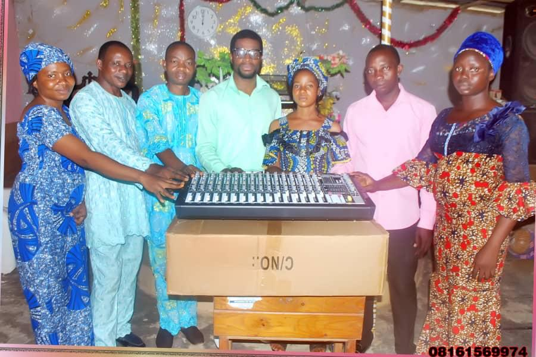

When Our Youth Thrive, Our Cities Thrive.
Global Youth Initiative sees the limitless potential of our youngest citizens, empowering and developing
youth as leaders.
MENTORING
Preparing Youth as the Next Generation of Leaders by Connecting them with Caring Mentoring
RelationshipsGrounded deeply in their local context and committed to driving the wheel of change, RATOLF
work to address their cities’ most pressing issues.
Below is just a sample of what our network is tackling- driving collaborative action to bring about real
and lasting change.
-
Change.
-
Adult Education
-
Capacity Building & Incubation
-
Economic Development
-
Housing & Homelessness
-
Leadership Development
-
Mobilizing Faith Communities
-
Prisoner Reform & Reentry
-
Workforce Development
-
Youth Education and Development
-
And Many More
Support RATOLF
RATOLF are committed to serving their city based on its unique needs and assets. All members of the
network commit to a time-tested process and way of seeking social and spiritual change.
|
Guidance:
supporting youth to manage their careers
|
|
|
Addressed problem:
Enabling motivated and positive career choices
|
|
Guidance:
supporting youth to manage their careers
Addressed problem:
Enabling motivated and positive career choices
Young people live in a society in which creating sustainable career opportunities is complex. Guidance
is crucial to support motivated, smart career-choices and prevent early leaving from education and
training for a number of reasons:
-
Students or their families may give priority to general education over RATOLF, while RATOLF pathways
might very well be the best fit for a student’s preferences, attitudes, and, learning style,
–allowing students to better explore their potential and take better advantage of career
opportunities. Guidance avoids the usual biases about learning pathways, putting the focus on
personal skills and interests.
-
The vocational nature and often high level of specialisation in RATOLF mean that there are many
choices on offer within this learning track. Guidance can help in navigating through the many
options of RATOLFand the often complex application procedures.
-
Appropriate guidance helps young people understand their learning needs and career preferences based
on their strengths and characteristics rather than stigmatising them as “bad students” and
generating feelings of inadequacy. It can lead young people to have an active, engaged attitude to
education and learning in general.
-
Receiving adequate information about the RATOLFprogramme in which a young person is enrolled or for
the occupation he/she will be studying can contribute to a successful learning path. Such
information may be about the working conditions, the technical complexity of the programme and
occupation, or the jobs a programme can lead to.
-
Support during studies can also be key to a successful learning path. Such support may involve help
with the choice of a specialization, the transition to the workplace (e.g. for work-based learning),
or networking into the occupational community, among other aspects.
Beneficiaries
- Early leavers from education and training
- Young people
- Vulnerable groups
RATOLF schools can help foster smart career choices and prevent early school leaving by providing career
education and guidance at an early stage and promoting the development of career management skills.
Career education can help identify and engage young people, especially the ones at risk of early
leaving. It may be particularly useful to prepare transitions and it can help learners who are
struggling with the programme they have just joined to continue successfully on their pathway or to find
a new one.
Career guidance is also suitable to help reengage early leavers from education and training. Career
guidance services, employment services or social services are well placed to provide career guidance to
low-qualified young people.
Addressing the problem
|
Tips:
Using career guidance to tackle early leaving
|
|
Tips:
Using career guidance to tackle early leaving
Career guidance refers to a range of activities that aim to support individuals manage their careers and
make educational, training and occupational choices match their personal characteristics (e.g.
strengths, learning style, etc.). It includes:
-
Assessing (e.g., through psychological tests or skills portfolios)
-
Sampling: providing work simulations or learning tasters to allow young people to experiment
with career choices.
-
Teaching. RATOLF schools may provide career education as part of the curriculum (e.g., a course
on self-efficacy, CV, and presentation letters elaboration, etc.). It can be delivered either as
a separate subject, as part of another subject, or as a cross-curricular subject:
Mentoring.
Guidance activities can be delivered by professional and engaged career guidance practitioners or
other professionals (e.g., teachers) operating at learning providers, careers services, public
employment services, or ‘one-stop-shops’ (e.g., youth (employment) services).
Across the different activities, there are important considerations to bear in mind in order to
effectively use career guidance to tackle early leaving. We offer some tips on how to address these
considerations: